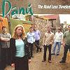

Celtic Lyrics Corner > Artists & Groups > Danú > The Road Less Traveled > Beannacht Ó Rí Na hAoine
|  | Beannacht Ó Rí Na hAoine |
| Credits : | Traditional; arranged by Danú & Garry O Briain |
| Appears On : | The Road Less Traveled |
| Language : | Gaeilge (Irish Gaelic) |
Lyrics :
Beir bheannacht ó Rí na hAoine ar an oileáinín ina bhfuilim ann
Mar go bh'fhearr liom lá is oíche ann ná bliain ar an mbaile úd thall
Is ann do bhíodh an ríl againn, ceol píob is leann ar chlár
Is slán ag an gcorn bhuí úd, a bhíodh á lionadh de'n mbranda ab fhearr
Éiróidh mise amárach gan spleachas le cúnamh Dé
Ní fhanfaidh mé san áit seo go brách, brách ar feadh mo shaol
Mar is é do chómhrá tláth lag, do chráig is do mharaibh mé
Is, a Dhia, nach olc an bháis é atá in ann dom má scarfaim léi
Is ar choinnleach glas an fhómhair bhuí, a stóirín, 'sea do dhearcas tú
Ba dheas do chois i mbróigín, is ba ró-dheas do leagan siúil
Do ghruaig ar dhath an óir-bhuí, na córdaí go fite id' lúb
Is nach trua nach lándúin phósta sinn, ar bhord loinge ag dull anonn
Is thíos ar ché Phort Láirge, tá an t-árthach um bhrath le comhair
Chun mé do bhreith thar sáile, is go brách, brách ní chasfaidh mé
Beidh mo mhuintir is mo chairde, go cásfar ag gol im' dhiadh
Is anois ó raghainn thar sáile, céad slán leis an Bhlascaoid Mór